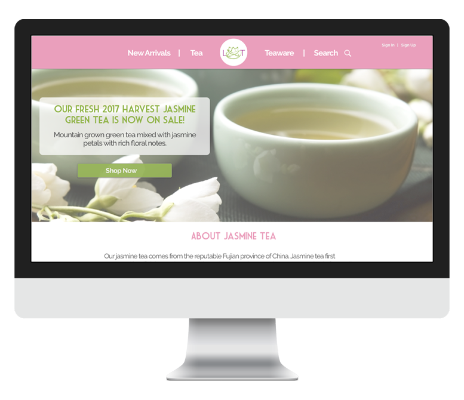

Lotus Teas
Chinese Tea Website
 Research (Summary, Problems & Solutions)
Summary
Lotus teas emerged in response to the stagnant Chinese tea market in America. Its aim is to provide an authentic experience of Chinese teas to the Western world. Users can order Chinese loose-leaf teas with a simple click of a button on Lotus Tea's website!
Problem
The tea market in the United States isn’t well established, more specifically the emphasis on Chinese tea. The tea that most people know about come from large commercialized companies such as Starbucks and Teavana. Many of these companies often falsely advertise their teas to be “authentic” and almost always adulterate the teas by adding sweeteners or other additives that take away from the quality of the tea. Many tea stores that specialize in Chinese tea are often overlooked as they don’t focus on their marketing, UX and their brand compared to the big corporations. By creating Lotus Teas, we can deliver fresh unadulterated Chinese traditional teas to the public.
Solution
The solution to this aforementioned problem is to focus on our branding and marketing skills, two aspects Chinese tea stores in the United States often neglect. In addition, by explaining the health benefits of the teas (something Starbucks and Teavana hasn’t done) we can attract customers who want to drink a tasty beverage which is also in turn good for their health!
Style Guide
Here are my inital sketches of YouCreate's logo. Since the app is a file-sharing app, I wanted to invoke feelings of community and trust through my logo. the first starred item represents unity as the letters Y and C join and become one. The bottom starred logo sketch displays the letters in a representation of a home. The middle starred logo of a Venn Diagram was the logo I finally chose. The letters represent two different ideas coming together and merging as one which I felt aptly described YouCreate.
Below you will see the logo in its final stage:
Packaging & High Fidelity Design